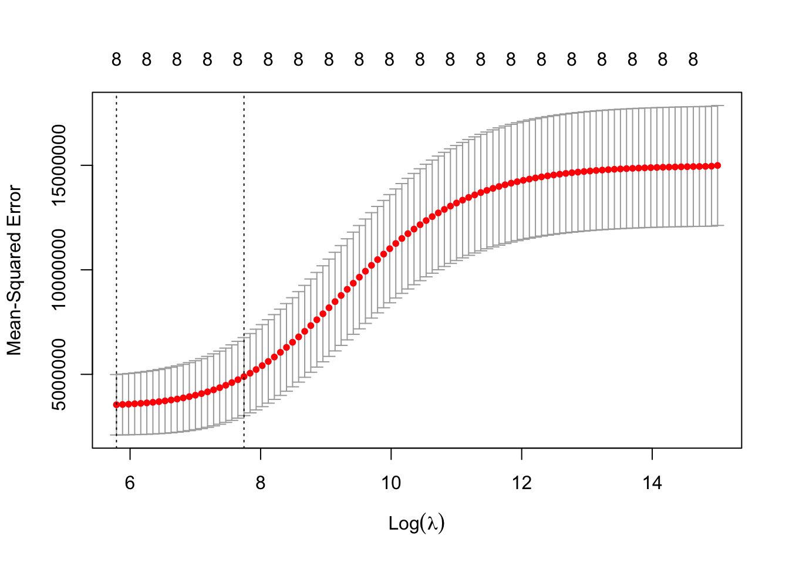
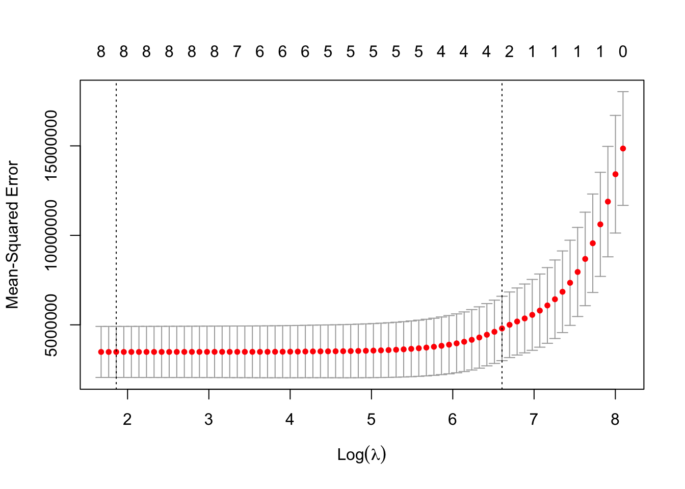
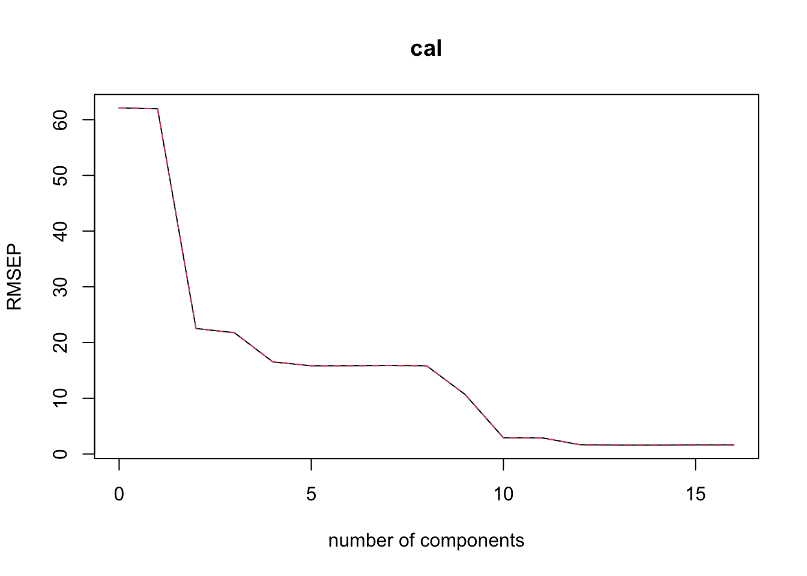
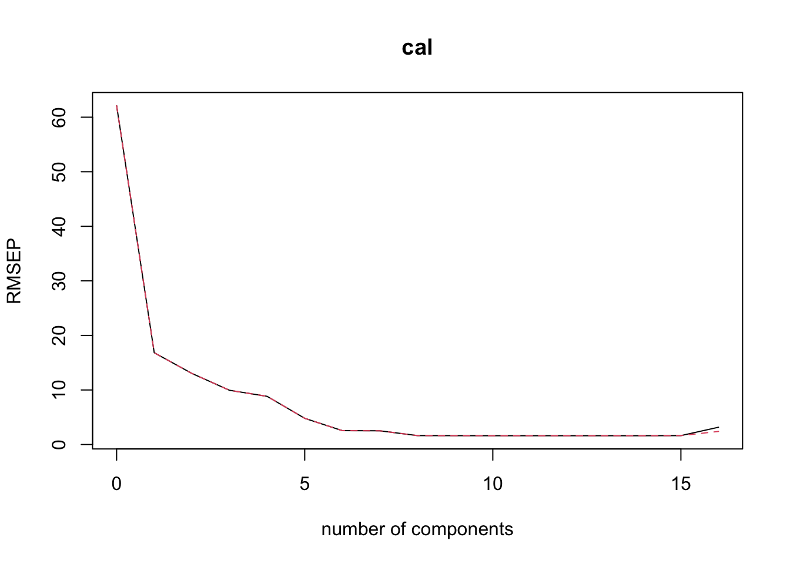

# Done for you
library(ISLR)
data(College)ITEC 621 - Homework 3 - Cross Validation and Dimensionality
Kogod School of Business
Submission:
Download the HW3_YourLastName.Rmd R Markdown file and save it with your own last name. Note, it is important that you conform to this file naming convention, otherwise it will affect the sorting of assignments for us. Please name your file as instructed and complete all your work in that template file, Knit the corresponding Word or PDF file. Your knitted file MUST display your R commands. In order to do this, please ensure that the knittr:: global option command above has echo=T.
Specific Instructions
Knitting, Writing and Professional Presentation
One of the goals of HW’s and Exercises is to practice with effective and professional R Markdown analytics report production. You are expected to prepare and produce your knitted document in a professional manner. Up to 10 points will be deducted for improper or no knitting and professional appearance. The main criteria is how acceptable your report would be for a buiness management or client audience, including: proper use of fonts, punctuation and sentence structure; lack of grammatical and spelling errors; and clear and succint articulation of narratives; among other things. Please note that this section is about report formatting and presentation. The quality and completeness of your answers will be graded separately in each question below.
Resources: Please make an appointment with the KCBC if you need help with the writing and presentations. The KCBC has a wonderful team of TA’s ready and eager to help with the writing. If you are an international student, please make an appointment with Shari Patillo, Associate Director of International Student Development. She is also very interested and eager to help international students, but all students are welcome.
1. (20 pts.) Multi-Collinearity Analysis
Load the {ISLR} library, which contains the College data set. Then type ?College in the console (not in the script) and familiarize yourself with the dataset.
1.1 Fit a full model to predict applications using all remaining variables as predictors and name it lm.fit.all. Then display the summary() of this model.
# Done for you
lm.fit.all <- lm(Apps ~ ., data = College)
summary(lm.fit.all)
Call:
lm(formula = Apps ~ ., data = College)
Residuals:
Min 1Q Median 3Q Max
-4908.8 -430.2 -29.5 322.3 7852.5
Coefficients:
Estimate Std. Error t value Pr(>|t|)
(Intercept) -445.08413 408.32855 -1.090 0.276053
PrivateYes -494.14897 137.81191 -3.586 0.000358 ***
Accept 1.58581 0.04074 38.924 < 2e-16 ***
Enroll -0.88069 0.18596 -4.736 2.60e-06 ***
Top10perc 49.92628 5.57824 8.950 < 2e-16 ***
Top25perc -14.23448 4.47914 -3.178 0.001543 **
F.Undergrad 0.05739 0.03271 1.754 0.079785 .
P.Undergrad 0.04445 0.03214 1.383 0.167114
Outstate -0.08587 0.01906 -4.506 7.64e-06 ***
Room.Board 0.15103 0.04829 3.127 0.001832 **
Books 0.02090 0.23841 0.088 0.930175
Personal 0.03110 0.06308 0.493 0.622060
PhD -8.67850 4.63814 -1.871 0.061714 .
Terminal -3.33066 5.09494 -0.654 0.513492
S.F.Ratio 15.38961 13.00622 1.183 0.237081
perc.alumni 0.17867 4.10230 0.044 0.965273
Expend 0.07790 0.01235 6.308 4.79e-10 ***
Grad.Rate 8.66763 2.94893 2.939 0.003390 **
---
Signif. codes: 0 '***' 0.001 '**' 0.01 '*' 0.05 '.' 0.1 ' ' 1
Residual standard error: 1041 on 759 degrees of freedom
Multiple R-squared: 0.9292, Adjusted R-squared: 0.9276
F-statistic: 585.9 on 17 and 759 DF, p-value: < 2.2e-161.2 Then, load the {klaR} (for CI) and {car} (for VIF’s) libraries. Obtain the Condition Index (CI) for this model using the cond.index(). That is, feed the lm.fit.all model into this function, along with the data = College parameter.
library(car)
library(klaR)
klaR::cond.index(lm.fit.all, data = College) # calculate CI [1] 1.000000 2.650021 4.960084 6.383467 8.609577 9.618359 10.716476
[8] 11.974004 13.918283 15.120624 18.815725 20.313196 22.308564 25.147448
[15] 28.557217 30.886931 44.312276 51.9833541.3 Then load the {car} library and then compute and display the Variance Inflation Factors (VIF’s) for the predictors in the model using the vif() function.
car::vif(lm.fit.all) # calculate VIFs Private Accept Enroll Top10perc Top25perc F.Undergrad
2.699896 7.136020 21.365412 6.929185 5.631213 18.017997
P.Undergrad Outstate Room.Board Books Personal PhD
1.713431 4.205568 2.007318 1.108744 1.305171 4.104258
Terminal S.F.Ratio perc.alumni Expend Grad.Rate
4.026296 1.896717 1.849254 2.975392 1.836249 1.4 Do the CI and VIF’s provide evidence of severe multicollinearity with the model? Why or why not? Which variables seem to be the problem.
Yes, there is evidence of severe multicollinearity based on the CI of 51.9833 and the VIFs of 21.3654 and 18.0179 for the variables Enroll and F.Undergrad, respectively.
1.5 Fit a reduced model to predict Apps on Enroll and Top10perc only. Name it lm.fit.reduced. Display: (a) the model summary results; (b) the CI, but this time using scale=T, center=T, add.intercept=F; and (c) the VIF’s.
lm.fit.reduced <- stats::lm(Apps ~ Enroll + Top10perc, College) # fit a reduced model
summary(lm.fit.reduced) # view summary statistics
Call:
stats::lm(formula = Apps ~ Enroll + Top10perc, data = College)
Residuals:
Min 1Q Median 3Q Max
-9468 -666 -115 409 32087
Coefficients:
Estimate Std. Error t value Pr(>|t|)
(Intercept) -795.11465 134.15208 -5.927 4.64e-09 ***
Enroll 3.38249 0.07572 44.671 < 2e-16 ***
Top10perc 42.03776 3.98841 10.540 < 2e-16 ***
---
Signif. codes: 0 '***' 0.001 '**' 0.01 '*' 0.05 '.' 0.1 ' ' 1
Residual standard error: 1927 on 774 degrees of freedom
Multiple R-squared: 0.7526, Adjusted R-squared: 0.752
F-statistic: 1177 on 2 and 774 DF, p-value: < 2.2e-16klaR::cond.index(lm.fit.reduced, scale = T, center = T, add.intercept=F, data = College) # calculate CI[1] 1.00000 2.34743 3.91938car::vif(lm.fit.reduced) # calculate VIFs Enroll Top10perc
1.033984 1.033984 1.6 Was the multi-collinearity problem eliminated? Why or why not?
Analysis
Yes, multicollinearity was addressed because the Condition Index and Variable Inflation Factors dropped to acceptable levels \(CI < 50\) and \(VIF_i < 10\), respectively.
2. (20 pts.) Variable Selection with Stepwise
2.1 Let’s try the Stepwise approach to variable selection to find an optimal model between lm.fit.reduced and lm.fit.large. We already have lm.fit.reduced so let’s fit the larger model lm.fit.large with all variables that make sense from a business standpoint. Display the summary() results for lm.fit.large.
# Done for you
lm.fit.large <- stats::lm(Apps~Enroll+Top10perc+Outstate+Room.Board+PhD+S.F.Ratio+Expend+Grad.Rate,data=College)
summary(lm.fit.large)
Call:
stats::lm(formula = Apps ~ Enroll + Top10perc + Outstate + Room.Board +
PhD + S.F.Ratio + Expend + Grad.Rate, data = College)
Residuals:
Min 1Q Median 3Q Max
-8652.4 -617.6 -114.7 474.0 31465.0
Coefficients:
Estimate Std. Error t value Pr(>|t|)
(Intercept) -3.922e+03 5.586e+02 -7.023 4.80e-12 ***
Enroll 3.416e+00 8.293e-02 41.187 < 2e-16 ***
Top10perc 1.613e+01 5.689e+00 2.834 0.00471 **
Outstate -3.656e-02 2.940e-02 -1.243 0.21408
Room.Board 4.400e-01 8.062e-02 5.458 6.49e-08 ***
PhD -4.122e+00 5.146e+00 -0.801 0.42336
S.F.Ratio 4.704e+01 2.229e+01 2.110 0.03519 *
Expend 9.719e-02 2.104e-02 4.619 4.52e-06 ***
Grad.Rate 1.493e+01 4.875e+00 3.064 0.00226 **
---
Signif. codes: 0 '***' 0.001 '**' 0.01 '*' 0.05 '.' 0.1 ' ' 1
Residual standard error: 1827 on 768 degrees of freedom
Multiple R-squared: 0.7796, Adjusted R-squared: 0.7773
F-statistic: 339.5 on 8 and 768 DF, p-value: < 2.2e-16Use the step() function to run a stepwise variable selection process. Save the stepwise results in an object named lm.stepwise. As you know, the stepwise approach can start with the larger model and go backwards, or with the reduced model and proceed forward. Let’s do the backwards stepwise by entering lm.fit.large as the starting base.
Use the scope=list() function from the lower bound model of lm.fit.reduced and the upper bound model of lm.fit.large. This will limit the set of stepwise models tried to only those within this scope. Also, in both cases, use direction="both" (that is, stepwise) and test="F" to get p-values for the predictors.
After run the stepwise variable selection process, display the summary() results.
null_model <- stats::lm(Apps ~ 0, College) # fit a null model that I didn't end up using
lm.stepwise <- stats::step(lm.fit.large, scope=list(lower=lm.fit.reduced, upper=lm.fit.large),
direction="both", test="F") # run stepwise regressionStart: AIC=11679.79
Apps ~ Enroll + Top10perc + Outstate + Room.Board + PhD + S.F.Ratio +
Expend + Grad.Rate
Df Sum of Sq RSS AIC F value Pr(>F)
- PhD 1 2140775 2564455998 11678 0.6417 0.423361
- Outstate 1 5158573 2567473795 11679 1.5462 0.214081
<none> 2562315222 11680
- S.F.Ratio 1 14851935 2577167157 11682 4.4516 0.035192 *
- Grad.Rate 1 31313260 2593628482 11687 9.3855 0.002264 **
- Expend 1 71183114 2633498336 11699 21.3356 4.519e-06 ***
- Room.Board 1 99401404 2661716627 11707 29.7935 6.490e-08 ***
---
Signif. codes: 0 '***' 0.001 '**' 0.01 '*' 0.05 '.' 0.1 ' ' 1
Step: AIC=11678.44
Apps ~ Enroll + Top10perc + Outstate + Room.Board + S.F.Ratio +
Expend + Grad.Rate
Df Sum of Sq RSS AIC F value Pr(>F)
- Outstate 1 6101776 2570557773 11678 1.8297 0.176557
<none> 2564455998 11678
+ PhD 1 2140775 2562315222 11680 0.6417 0.423361
- S.F.Ratio 1 13718120 2578174118 11681 4.1136 0.042883 *
- Grad.Rate 1 31183379 2595639376 11686 9.3509 0.002306 **
- Expend 1 69627645 2634083643 11697 20.8791 5.697e-06 ***
- Room.Board 1 97587525 2662043522 11706 29.2634 8.443e-08 ***
---
Signif. codes: 0 '***' 0.001 '**' 0.01 '*' 0.05 '.' 0.1 ' ' 1
Step: AIC=11678.28
Apps ~ Enroll + Top10perc + Room.Board + S.F.Ratio + Expend +
Grad.Rate
Df Sum of Sq RSS AIC F value Pr(>F)
<none> 2570557773 11678
+ Outstate 1 6101776 2564455998 11678 1.8297 0.176557
+ PhD 1 3083978 2567473795 11679 0.9237 0.336807
- S.F.Ratio 1 17375420 2587933194 11682 5.2047 0.022798 *
- Grad.Rate 1 25691863 2596249636 11684 7.6959 0.005669 **
- Expend 1 63525871 2634083644 11695 19.0289 1.463e-05 ***
- Room.Board 1 95376286 2665934059 11705 28.5696 1.192e-07 ***
---
Signif. codes: 0 '***' 0.001 '**' 0.01 '*' 0.05 '.' 0.1 ' ' 1summary(lm.stepwise) # view summary statistics
Call:
stats::lm(formula = Apps ~ Enroll + Top10perc + Room.Board +
S.F.Ratio + Expend + Grad.Rate, data = College)
Residuals:
Min 1Q Median 3Q Max
-8487.7 -651.9 -112.5 477.6 31538.5
Coefficients:
Estimate Std. Error t value Pr(>|t|)
(Intercept) -4.122e+03 5.256e+02 -7.843 1.47e-14 ***
Enroll 3.422e+00 7.709e-02 44.389 < 2e-16 ***
Top10perc 1.372e+01 5.408e+00 2.536 0.01141 *
Room.Board 3.875e-01 7.250e-02 5.345 1.19e-07 ***
S.F.Ratio 4.981e+01 2.183e+01 2.281 0.02280 *
Expend 8.740e-02 2.003e-02 4.362 1.46e-05 ***
Grad.Rate 1.286e+01 4.637e+00 2.774 0.00567 **
---
Signif. codes: 0 '***' 0.001 '**' 0.01 '*' 0.05 '.' 0.1 ' ' 1
Residual standard error: 1827 on 770 degrees of freedom
Multiple R-squared: 0.7788, Adjusted R-squared: 0.7771
F-statistic: 452 on 6 and 770 DF, p-value: < 2.2e-162.2 Notice that S.F.Ratio is significant at the p=0.02 level, which is OK for most purposes. However, let’s suppose that for this model you wish to include only variables significant at the p<0.01 level. In this case, you need to include the k= attribute. To find out the value of k to use, enter qchisq(0.01, 1, lower.tail=F). You should get 6.6. Thus, entering k=6.6 as an attribute in the step() function should yield a more restrictive model. Fit a stepwise model and store the results in an object named lm.stepwise.01. Then display its summary() results.
stats::qchisq(0.01, 1, lower.tail = FALSE) -> k_value
lm.stepwise.01 <- stats::step(lm.fit.large, scope = list(lower=lm.fit.reduced, upper=lm.fit.large),
direction = "both", test = "F", k = k_value) # fit new stepwise modelStart: AIC=11721.5
Apps ~ Enroll + Top10perc + Outstate + Room.Board + PhD + S.F.Ratio +
Expend + Grad.Rate
Df Sum of Sq RSS AIC F value Pr(>F)
- PhD 1 2140775 2564455998 11716 0.6417 0.423361
- Outstate 1 5158573 2567473795 11716 1.5462 0.214081
- S.F.Ratio 1 14851935 2577167157 11719 4.4516 0.035192 *
<none> 2562315222 11722
- Grad.Rate 1 31313260 2593628482 11724 9.3855 0.002264 **
- Expend 1 71183114 2633498336 11736 21.3356 4.519e-06 ***
- Room.Board 1 99401404 2661716627 11744 29.7935 6.490e-08 ***
---
Signif. codes: 0 '***' 0.001 '**' 0.01 '*' 0.05 '.' 0.1 ' ' 1
Step: AIC=11715.52
Apps ~ Enroll + Top10perc + Outstate + Room.Board + S.F.Ratio +
Expend + Grad.Rate
Df Sum of Sq RSS AIC F value Pr(>F)
- Outstate 1 6101776 2570557773 11711 1.8297 0.176557
- S.F.Ratio 1 13718120 2578174118 11713 4.1136 0.042883 *
<none> 2564455998 11716
- Grad.Rate 1 31183379 2595639376 11718 9.3509 0.002306 **
+ PhD 1 2140775 2562315222 11722 0.6417 0.423361
- Expend 1 69627645 2634083643 11730 20.8791 5.697e-06 ***
- Room.Board 1 97587525 2662043522 11738 29.2634 8.443e-08 ***
---
Signif. codes: 0 '***' 0.001 '**' 0.01 '*' 0.05 '.' 0.1 ' ' 1
Step: AIC=11710.73
Apps ~ Enroll + Top10perc + Room.Board + S.F.Ratio + Expend +
Grad.Rate
Df Sum of Sq RSS AIC F value Pr(>F)
- S.F.Ratio 1 17375420 2587933194 11709 5.2047 0.022798 *
<none> 2570557773 11711
- Grad.Rate 1 25691863 2596249636 11712 7.6959 0.005669 **
+ Outstate 1 6101776 2564455998 11716 1.8297 0.176557
+ PhD 1 3083978 2567473795 11716 0.9237 0.336807
- Expend 1 63525871 2634083644 11723 19.0289 1.463e-05 ***
- Room.Board 1 95376286 2665934059 11732 28.5696 1.192e-07 ***
---
Signif. codes: 0 '***' 0.001 '**' 0.01 '*' 0.05 '.' 0.1 ' ' 1
Step: AIC=11709.33
Apps ~ Enroll + Top10perc + Room.Board + Expend + Grad.Rate
Df Sum of Sq RSS AIC F value Pr(>F)
<none> 2587933194 11709
- Grad.Rate 1 23383194 2611316387 11710 6.9663 0.0084735 **
+ S.F.Ratio 1 17375420 2570557773 11711 5.2047 0.0227976 *
+ Outstate 1 9759076 2578174118 11713 2.9147 0.0881813 .
+ PhD 1 1750276 2586182918 11715 0.5211 0.4705834
- Expend 1 46720727 2634653920 11717 13.9191 0.0002049 ***
- Room.Board 1 91424463 2679357657 11730 27.2373 2.316e-07 ***
---
Signif. codes: 0 '***' 0.001 '**' 0.01 '*' 0.05 '.' 0.1 ' ' 1summary(lm.stepwise.01) # view summary statistics
Call:
stats::lm(formula = Apps ~ Enroll + Top10perc + Room.Board +
Expend + Grad.Rate, data = College)
Residuals:
Min 1Q Median 3Q Max
-8444.9 -637.8 -110.6 436.7 31619.9
Coefficients:
Estimate Std. Error t value Pr(>|t|)
(Intercept) -3.183e+03 3.274e+02 -9.722 < 2e-16 ***
Enroll 3.480e+00 7.290e-02 47.739 < 2e-16 ***
Top10perc 1.326e+01 5.419e+00 2.448 0.014602 *
Room.Board 3.789e-01 7.260e-02 5.219 2.32e-07 ***
Expend 6.738e-02 1.806e-02 3.731 0.000205 ***
Grad.Rate 1.225e+01 4.642e+00 2.639 0.008473 **
---
Signif. codes: 0 '***' 0.001 '**' 0.01 '*' 0.05 '.' 0.1 ' ' 1
Residual standard error: 1832 on 771 degrees of freedom
Multiple R-squared: 0.7773, Adjusted R-squared: 0.7759
F-statistic: 538.4 on 5 and 771 DF, p-value: < 2.2e-162.3 Compare the two stepwise results above. What is the main difference between the 2?
Analysis
The S.F.Ratio variable is not longer siginificant to the model and the adjusted \(r^2\) value increases with the new model slightly from \(r^2 = 0.7771\) to \(r^2 = 0.7779\).
2.4 Notice that Top10perc was included in lm.stepwise.01 even thought p>0.01. Why do you think this happened?
Analysis
Because by including Top10perc, the overall model has a better adjusted \(r^2\) value and a smaller AIC value, so it is included in the model. So even though Top10perc is not statistically significant in terms of individual p value, it adds significane to the overall model by its inclusion.
3. (20 pts.) Cross Validation
Load the {car} library and attach the dataset into your work environment. Run ?Salaries from the console (not in the script) and inspect the variables in this dataset.
# Done for you
#library(car)
data(Salaries)
attach(Salaries)Random Splitting (Holdout Sample)
3.1 Enter set.seed(15) so that you get the same results if you run your cross validation commands multiple times. Then use the sample() function to create an index vector called train which you can later use to split the data set into 80% train subsample.
Also, do a quick inspection of your results by: list the number of rows of the Salaries dataset; the length of the train vector; the first 10 values in the train vector; and the corresponding 10 first observations in the train subset (tip: use Salaries[train[1:10],], but try to understand why).
set.seed(15) # set seed for reproducibility
train <- sample(1:nrow(Salaries), 0.8 * nrow(Salaries)) # create sample subset
print(nrow(Salaries))[1] 397print(length(train))[1] 317print(utils::head(train))[1] 37 362 162 294 177 261print(Salaries[train[1:10],]) rank discipline yrs.since.phd yrs.service sex salary
37 Prof B 22 21 Male 155750
362 Prof A 23 15 Female 109646
162 Prof B 26 19 Male 176500
294 AssocProf A 11 1 Male 104800
177 AssocProf B 10 7 Male 95436
261 AssocProf A 41 33 Male 88600
217 Prof B 15 11 Male 146000
204 Prof B 17 17 Male 152500
363 Prof A 30 30 Male 138771
84 AsstProf B 6 2 Male 888253.2 Fit a linear model to predict salary using all remaining variables as predictors, but using only the train data subset. Store your resulting model in an object named fit.train and display the summary() results.
fit.train <- stats::lm(salary ~ ., data = Salaries[train,]) # fit linear model
summary(fit.train) # view summary statistics
Call:
stats::lm(formula = salary ~ ., data = Salaries[train, ])
Residuals:
Min 1Q Median 3Q Max
-66638 -13727 -1157 10652 98491
Coefficients:
Estimate Std. Error t value Pr(>|t|)
(Intercept) 64513.6 5277.7 12.224 < 2e-16 ***
rankAssocProf 11808.8 4750.1 2.486 0.0134 *
rankProf 45580.5 4930.7 9.244 < 2e-16 ***
disciplineB 14304.5 2713.2 5.272 2.53e-07 ***
yrs.since.phd 637.4 266.9 2.389 0.0175 *
yrs.service -565.2 237.6 -2.379 0.0180 *
sexMale 5910.5 4540.1 1.302 0.1939
---
Signif. codes: 0 '***' 0.001 '**' 0.01 '*' 0.05 '.' 0.1 ' ' 1
Residual standard error: 23300 on 310 degrees of freedom
Multiple R-squared: 0.4668, Adjusted R-squared: 0.4565
F-statistic: 45.24 on 6 and 310 DF, p-value: < 2.2e-163.3 Using the fit.train model, compute the MSE for the train and test subsets. Store the results in objects named train.mse and test.mse, respectively. Then, use the c() function to display these two results together with their respective labels “Train MSE” and “Test MSE”
# compute train MSE
train.mse <- mean((Salaries$salary[train] - stats::predict(fit.train, newdata = Salaries[train,]))^2)
# compute test MSE
test.mse <- mean((Salaries$salary[-train] - stats::predict(fit.train, newdata = Salaries[-train,]))^2)
c("Train MSE" = train.mse, "Test MSE" = test.mse) # concatenate into a listTrain MSE Test MSE
530935984 380309293 3.4 Briefly comment on the difference between the Train and Test MSE values. Is this what you expected? Why or why not?
Analysis
The MSE of the training data set was greater than that of the test data. That was expected due to the difference in sample sizes of the test and training data. This is what I had expected, although with an 80/20 split, I expected the test MSE to be less than it was in proportion to the train MSE.
Leave One Out Validation (LOOCV)
3.5 Using the Salaries{car} data set, fit a GLM model to predict salary using all predictors. Display the summary results. Store the results in an object named glm.fit. Tip: when you use the glm() function you need to specify the family and the link function. However, if you don’t specify a family, the “gaussian” family (i.e., normal distribution) and the “identity” link (i.e., no transformation of the response variable) will be used as defaults. So just use the glm() function exactly how you use the lm() function and the result will be an OLS model.
# fit glm
glm.fit <- stats::glm(salary ~ ., data = Salaries, family = stats::gaussian(link = "identity"))
summary(glm.fit) # view summary statistics
Call:
stats::glm(formula = salary ~ ., family = stats::gaussian(link = "identity"),
data = Salaries)
Coefficients:
Estimate Std. Error t value Pr(>|t|)
(Intercept) 65955.2 4588.6 14.374 < 2e-16 ***
rankAssocProf 12907.6 4145.3 3.114 0.00198 **
rankProf 45066.0 4237.5 10.635 < 2e-16 ***
disciplineB 14417.6 2342.9 6.154 1.88e-09 ***
yrs.since.phd 535.1 241.0 2.220 0.02698 *
yrs.service -489.5 211.9 -2.310 0.02143 *
sexMale 4783.5 3858.7 1.240 0.21584
---
Signif. codes: 0 '***' 0.001 '**' 0.01 '*' 0.05 '.' 0.1 ' ' 1
(Dispersion parameter for gaussian family taken to be 507990599)
Null deviance: 3.6330e+11 on 396 degrees of freedom
Residual deviance: 1.9812e+11 on 390 degrees of freedom
AIC: 9093.8
Number of Fisher Scoring iterations: 23.6 Load the {boot} library and use the cv.glm() function and the glm.fit object above to compute and display the LOOCV MSE (Leave One Out) for this model (the first element $delta[1]) contains the raw MSE.
library(boot)
loocv <- boot::cv.glm(Salaries, glm.fit, K = nrow(Salaries))# compute LOOCV
print(loocv$delta[1]) # view the raw MSE[1] 516540699Technical Note FYI: since glm() and lm() can both fit OLS models, some times it is convenient to use one or the other because other useful libraries and functions need either glm() or lm() objects specifically. This is one of these cases – the cv.glm() function only works with glm() objects. However, if you are interested in R-Squares and F-Statistics you and run the same model with lm() and you should get the same results.*
K-Fold Validation (KFCV)
3.7 Using the same cv.glm() function and glm.fit model object, compute and display the 10-Fold cross validation MSE for this model.
cfv10 <- boot::cv.glm(Salaries, glm.fit, K = 10) # compute 10-fold CV
print(cfv10$delta[1]) # view the raw MSE[1] 5240866393.8 Compare the differences between the 10FCV result above and this LOOCV result and provide a brief concluding comment. Is there a meaning to the difference between these 2 MSE values? Please explain why or why not.
Analysis
The LOOCV MSE is much smaller than the 10FCV MSE (\(516540699 < 524086639\)) because the LOOCV captures a lot of noise and tends to overfit the model by only leaving out one data point per model iteration. The 10FCV will introduce more bias into the model in comparison to the LOOCV model will, but the 10FCV model will perform better against new because it does not capture the noise that the LOOCV model captures, which is evidenced by the smaller MSE of the LOOCV.
4. (20 pts.) Ridge and LASSO
4.1 Setup: x matrix and y vector (done for you)
First, change the scientific notation with options(scipen=4).
Then, load the {glmnet} and {ISLR} libraries. Then run ?College in the R Console (not in the script) to view and familiarize yourself with the College data set attributes. Enter College=na.omit(College) to remove all rows with omitted values.
Then, create an x predictor matrix with the model.matrix() function with the following variables: Apps~Enroll+Top10perc+Outstate+Room.Board+PhD+S.F.Ratio+Expend+Grad.Rate, from the College data set in {ISLR}, but remove the intercept (first) column from the resulting matrix with [,-1]. Then create the y vector using Apps column in the College data set.
# Done for you
options(scipen=4)
library(glmnet) # Contains functions for Ridge and LASSO
library(ISLR) # Contains the College data set
College=na.omit(College)
x=model.matrix(Apps~Enroll+Top10perc+Outstate+Room.Board+PhD+S.F.Ratio+Expend+Grad.Rate, data=College)[,-1]
y=College$Apps4.2 Then fit a Ridge regression x and y. Name the resulting object ridge.mod. Enter `ridge.mod$lambda[1:6] to view the first 6 lambda values.
ridge.mod <- glmnet::glmnet(x, y, alpha = 0) # fit a ridge regression model
ridge.mod$lambda[1:6] # view the first 6 lambda values[1] 3275262 2984297 2719180 2477616 2257511 20569604.3 Enter set.seed(1) so that your sample matches my results. Then, using the cv.glmnet() function in the {glmnet} package, compute the cross-validation statistics for the ridge.mod model above. Store the results in an object named ridge.cv.
Then use the cbind() funtion to display the ridge.cv$lambda and ridge.cv$cvm results together. Label the two columns “Lambda” and “10FCV” respectively
set.seed(1) # assign set seed
ridge.cv <- glmnet::cv.glmnet(x, y, alpha = 0) # apply cross validation
cbind(Lambda = ridge.cv$lambda, `10FCV` = ridge.cv$cvm) Lambda 10FCV
[1,] 3275262.2859 14991855
[2,] 2984297.0115 14957827
[3,] 2719180.2900 14948481
[4,] 2477615.8074 14943973
[5,] 2257511.2477 14939030
[6,] 2056960.1704 14933609
[7,] 1874225.4981 14927666
[8,] 1707724.4704 14921150
[9,] 1556014.9352 14914007
[10,] 1417782.8569 14906178
[11,] 1291830.9354 14897597
[12,] 1177068.2356 14888195
[13,] 1072500.7377 14877892
[14,] 977222.7281 14866606
[15,] 890408.9542 14854245
[16,] 811307.4768 14840708
[17,] 739233.1566 14825887
[18,] 673561.7204 14809664
[19,] 613724.3536 14791910
[20,] 559202.7735 14772488
[21,] 509524.7403 14751246
[22,] 464259.9667 14728021
[23,] 423016.3908 14702638
[24,] 385436.7805 14674907
[25,] 351195.6393 14644623
[26,] 319996.3866 14611567
[27,] 291568.7896 14575503
[28,] 265666.6219 14536180
[29,] 242065.5314 14493328
[30,] 220561.0968 14446661
[31,] 200967.0568 14395876
[32,] 183113.6974 14340652
[33,] 166846.3812 14280650
[34,] 152024.2085 14215516
[35,] 138518.7968 14144879
[36,] 126213.1687 14068356
[37,] 115000.7387 13985549
[38,] 104784.3900 13896053
[39,] 95475.6336 13799454
[40,] 86993.8414 13695336
[41,] 79265.5483 13583284
[42,] 72223.8155 13462890
[43,] 65807.6508 13333757
[44,] 59961.4804 13195509
[45,] 54634.6678 13047796
[46,] 49781.0745 12890304
[47,] 45358.6610 12722761
[48,] 41329.1226 12544952
[49,] 37657.5573 12356725
[50,] 34312.1637 12158001
[51,] 31263.9656 11948789
[52,] 28486.5611 11729192
[53,] 25955.8935 11499412
[54,] 23650.0435 11259773
[55,] 21549.0388 11010716
[56,] 19634.6816 10752805
[57,] 17890.3906 10486735
[58,] 16301.0576 10213329
[59,] 14852.9165 9933534
[60,] 13533.4244 9648416
[61,] 12331.1523 9359147
[62,] 11235.6867 9066994
[63,] 10237.5392 8773300
[64,] 9328.0645 8479461
[65,] 8499.3849 8186904
[66,] 7744.3230 7897061
[67,] 7056.3387 7611344
[68,] 6429.4730 7331115
[69,] 5858.2963 7057664
[70,] 5337.8614 6792184
[71,] 4863.6605 6535755
[72,] 4431.5863 6289323
[73,] 4037.8964 6053693
[74,] 3679.1808 5829537
[75,] 3352.3326 5617359
[76,] 3054.5206 5417433
[77,] 2783.1654 5229999
[78,] 2535.9166 5055114
[79,] 2310.6328 4892707
[80,] 2105.3625 4742589
[81,] 1918.3279 4604470
[82,] 1747.9090 4477968
[83,] 1592.6296 4362626
[84,] 1451.1447 4257926
[85,] 1322.2290 4163304
[86,] 1204.7659 4078160
[87,] 1097.7378 4001870
[88,] 1000.2178 3933801
[89,] 911.3612 3873318
[90,] 830.3984 3819793
[91,] 756.6281 3772613
[92,] 689.4113 3731186
[93,] 628.1659 3694949
[94,] 572.3614 3663368
[95,] 521.5144 3635952
[96,] 475.1845 3612215
[97,] 432.9704 3591744
[98,] 394.5065 3574132
[99,] 359.4596 3559042
[100,] 327.5262 3545828plot(ridge.cv)
4.4 It should be obvious from the output above that the best lambda will be quite small. Let’s find it. Find the best lambda and store it in an object named ridge.bestlam. Then find the minimum cross-validation MSE with min(ridge.cv$cvm) and store the results in an object named min.mse. Display the resulting two values together using the cbind() function, with proper labels
ridge.bestlam <- ridge.cv$lambda[which.min(ridge.cv$cvm)] # find best lambda
min.mse <- min(ridge.cv$cvm) # find minimum mse
cbind(`Best Lambda` = ridge.bestlam, `Minimum MSE` = min.mse) Best Lambda Minimum MSE
[1,] 327.5262 35458284.5 Now, extract the coefficients for the Ridge regression with the best lambda you just found above and name the coefficient vector ridge.coef. You can use the predict() or coef() functions with s=bestlam for this purpose. Then extract the OLS coefficients using s=0 and name this vector ols.coef. List the two sets of coefficients side by side using the cbind() function.
ridge.coef <- stats::coef(ridge.cv, s = ridge.bestlam) # extract coefficients for best lambda
ols.coef <- stats::coef(ridge.cv, s = 0) # extract ols coefficients
cbind(`Ridge Coefficients` = ridge.coef, `OLS Coefficients` = ols.coef)9 x 2 sparse Matrix of class "dgCMatrix"
s1 s1
(Intercept) -3955.50061103 -3955.50061103
Enroll 3.09324335 3.09324335
Top10perc 18.12887428 18.12887428
Outstate -0.03810031 -0.03810031
Room.Board 0.38848585 0.38848585
PhD 3.59405610 3.59405610
S.F.Ratio 53.94981532 53.94981532
Expend 0.08996626 0.08996626
Grad.Rate 13.12904964 13.129049644.6 Is there much difference between the Ridge and OLS regression coefficients? Why do you think that is?
Analysis
There is no difference between the Ridge and OLS regression coefficients. This is because we have already removed the variables that are highly correlated to reduce multicollinearity.
4.7 Which of the two models would you chose and why?
Analysis
I would choose the OLS model because it is simpler and easier to interpret. We have adequately addressed multicollinearity, so the added complexity of the ridge regression does not make sense in this case.
4.8 Using the Ridge model with the best lambda, interpret the coefficient for the predictor PhD. To answer this, review the documentation for the College data set and articulate your interpretation correctly.
Analysis
For every 1% increase of the number of college professors with a PhD there is an 3.5 unit increase in the number of applications received.
4.9 LASSO Illustration (only, not required)
This is not required for this homework, but you should try this on your own. Try the model above with LASSO instead of Ridge simply by copying and pasting all the commands above and changing alpha from 0 to 1. You may want to name your objects differently.
# LASSO Example done for you
# I'm not repeating some of the lines above because LASSO is using the same libraries and model matrices
# Just change alpha from 0 to 1
lasso.mod <- glmnet(x, y, alpha=1)
# Cross-validation
lasso.cv=cv.glmnet(x,y,alpha=1)
plot(lasso.cv)
# Best Lambda
lasso.bestlam <- lasso.cv$lambda.min
min.mse=min(lasso.cv$cvm)
cbind("Best LASSO Lambda"=lasso.bestlam, "Best LASSO MSE"=min.mse) Best LASSO Lambda Best LASSO MSE
[1,] 6.429473 3485673# LASSO yields a smaller MSE=3.4M compared to Ridge's MSE=3.6M. LASSO is slightly better in this case.
lasso.coef <- coef(lasso.mod, s=lasso.bestlam)
# Alternatively, predict(lasso.mod, type="coefficients", s=bestlam)
# Listing Ridge, LASSO and OLS coefficients together
cbind(ridge.coef, lasso.coef, ols.coef)9 x 3 sparse Matrix of class "dgCMatrix"
s1 s1 s1
(Intercept) -3955.50061103 -3859.57704167 -3955.50061103
Enroll 3.09324335 3.41358000 3.09324335
Top10perc 18.12887428 15.52752372 18.12887428
Outstate -0.03810031 -0.02819657 -0.03810031
Room.Board 0.38848585 0.42387306 0.38848585
PhD 3.59405610 -2.99282571 3.59405610
S.F.Ratio 53.94981532 43.59455293 53.94981532
Expend 0.08996626 0.09267400 0.08996626
Grad.Rate 13.12904964 14.14731860 13.12904964# Comment FYI: the relative importance of the coefficients are similar among all three models, Ridge, LASSO and OLS, mainly because there was little shrinkage. Notice that different coefficients have shrunk at different rates. Also, note that due to the complex math involved in minimizing the SSE plus penalties, some coefficients may grow a bit before they shrink. The final size of the coefficients is less important because Ridge and LASSO yield “biased” coefficients, so you must interpret these with caution. The best lambda only ensures that predictions have the lowest MSE, so that the predictive accuracy of the model improves. The coefficients should only provide a general direction of results, but again, don’t bet on them because they are biased (sometimes they even change signs).5. (20 pts.) PCR and PLS
5.1 First, read the PizzaCal.csv file. After reading the file, open and inspect it to be sure that you read it correctly.
# Done for you
pizza <- read.table("/Users/coniecakes/Library/CloudStorage/OneDrive-Personal/001. Documents - Main/023. Programming Tools/R Studio/PredictiveAnalytics/Homework/data/PizzaCal.csv", header=TRUE, row.names=1, sep=",")
# Note on row.names=1 - the first column has pizza ID's, which are not really data to analyze, just row labels. This file contains nutrition data on a sample of 300 slices of frozen pizza (100 grams each):
- brand: categorical variable with brand labels
- import: binary variable, 0 if domestic, 1 if imported
- cal: number of caloerries in the slice
All remaining measures are in grams, per slice:
- mois: moisture content
- prot: amount of protein
- fat: fat content
- ash: ash content
- sodium: amount of sodium
- carb: amount of carbohydrates
You can explore the correlation matrix of this data set on your own (NOT in this script). and you will find that the variables are highly correlated. So, PCR or PLS would be good methods to use.
5.2 Principal Components Regression (PCR)
Load the {pls} library and fit a PCR model using the pcr() function to predict calories cal using all the remaining variables as predictors and the full data set. Use the LOOCV validation this time scale=T, validation="LOO". Store the results in an object named pcr.fit. Then inspect the results with a validationplot() and displaying its summary()
library(pls)
pcr.fit <- pls::pcr(cal ~ . , data = pizza, scale=T, validation="LOO") # fit pcr model
pls::validationplot(pcr.fit) # view validation plot
summary(pcr.fit) # view summary statisticsData: X dimension: 300 16
Y dimension: 300 1
Fit method: svdpc
Number of components considered: 16
VALIDATION: RMSEP
Cross-validated using 300 leave-one-out segments.
(Intercept) 1 comps 2 comps 3 comps 4 comps 5 comps 6 comps
CV 62.11 61.96 22.52 21.77 16.53 15.83 15.84
adjCV 62.11 61.96 22.52 21.77 16.52 15.83 15.84
7 comps 8 comps 9 comps 10 comps 11 comps 12 comps 13 comps
CV 15.89 15.84 10.7 2.916 2.908 1.648 1.613
adjCV 15.89 15.84 10.7 2.916 2.907 1.648 1.613
14 comps 15 comps 16 comps
CV 1.61 1.635 1.634
adjCV 1.61 1.634 1.633
TRAINING: % variance explained
1 comps 2 comps 3 comps 4 comps 5 comps 6 comps 7 comps 8 comps
X 29.970 48.10 57.71 65.69 72.84 79.83 86.78 93.71
cal 1.878 87.09 88.00 93.20 93.84 93.84 93.85 93.85
9 comps 10 comps 11 comps 12 comps 13 comps 14 comps 15 comps
X 99.35 99.75 99.87 99.93 99.99 100.00 100.00
cal 97.21 99.79 99.80 99.93 99.94 99.94 99.94
16 comps
X 100.00
cal 99.945.3 Choose 3 to 5 candidate models with different number of components, based on the scree plot and the summary output above. Provide a brief rationale for you selection of candidate models. In your answer, please refer to the “elbows” in the scree plot, the cross-validation (CV values of the RMSEP), and the % explained variance of the various components.
Analysis
There appear to be elbows at 2, 4, 5, 10, and 12 components. The 12 component has the lowest CV value, but does not provide a significant enough increase in % variance explained in X or the response variable cal. In an effort to balance simplicity with predictive power, we should choose the 10 component model. The 2 and 4 component models have much higher RMSE values and lower explanatory power compared to the 10 component model. However, the high explanatory values could be indicative of overfitting.
5.4 Coefficients
Regardless of your answer above, let’s explore a few models at each of the elbows, with 2, 4 and 10 components, and also for 5 components. Use the pcr.fit$coefficients attribute, but use [,,c(2,4,5,10)] as the index.
pcr.fit$coefficients[,,c(2,4,5,10)] # review coefficients 2 comps 4 comps 5 comps 10 comps
brandB -0.3785743 0.77780540 2.4712379 -5.8356727
brandC -4.7900960 -7.41263348 -4.9424732 -2.7566859
brandD -1.7397922 -0.58938831 -3.5713006 -1.9249543
brandE -3.0340624 2.39375786 2.6916871 2.6425361
brandF 6.7072207 2.88741929 2.9757668 0.4951699
brandG 6.6170059 3.44215201 3.2781923 0.9803379
brandH -3.7505411 2.72729146 3.3191092 3.0313570
brandI -8.7327146 -15.41874132 -15.8352175 -6.7959737
brandJ -4.6193218 -4.27143837 -5.7099818 -2.3600348
import 17.7594983 14.03872855 14.0242103 9.1788238
mois -15.1395782 -17.74148471 -17.7480890 -24.4265638
prot 1.1313916 0.02268209 0.2152082 -4.7858508
fat 13.2293389 15.08282179 15.4779708 45.7709229
ash 6.0613614 6.48278909 5.8815908 -7.4450275
sodium 12.2702088 13.96995718 13.8973738 -1.4912227
carb 0.6065962 1.42992934 1.2098732 -7.59458285.5 Which of these models would you select? Provide a concise but clear rationale for your selection. Refer to the bias vs. variance tradeoff and also to the cross-validation RMSE in your answer.
Analysis
I would chose the 5 component model because it best balances simplicity with explanatory power. There is great explanatory power with a small RMSE (93.84% and 15.83, respectively). This high explanatory power may be because the model is overfit and there will be higher variance when new data is introduced to the model.
5.6 Regardless of your answer above, to illustrate a simpler example, let’s fit a model with 5 components only, using the ncomp=5 attribute in the pcr() function. Name this model pcr.fit.5. Then display its summary(), the component $loadings and the resulting coefficients for 5 components, using the coef() function with the ncomp=5 attribute.
pcr.fit.5 <- pls::pcr(cal ~ ., data = pizza, scale=T, validation="LOO", ncomp=5) # fit 5 coefficient model
summary(pcr.fit.5) # view summary statisticsData: X dimension: 300 16
Y dimension: 300 1
Fit method: svdpc
Number of components considered: 5
VALIDATION: RMSEP
Cross-validated using 300 leave-one-out segments.
(Intercept) 1 comps 2 comps 3 comps 4 comps 5 comps
CV 62.11 61.96 22.52 21.77 16.53 15.83
adjCV 62.11 61.96 22.52 21.77 16.52 15.83
TRAINING: % variance explained
1 comps 2 comps 3 comps 4 comps 5 comps
X 29.970 48.10 57.71 65.69 72.84
cal 1.878 87.09 88.00 93.20 93.84pcr.fit.5$loadings # view loading components
Loadings:
Comp 1 Comp 2 Comp 3 Comp 4 Comp 5
brandB 0.156 -0.478 0.368
brandC 0.139 0.159 0.542 0.537
brandD 0.185 0.252 0.188 -0.648
brandE -0.132 -0.113 0.391
brandF -0.176 -0.220 0.138 -0.252
brandG -0.182 -0.218 0.181 -0.185
brandH -0.155 0.486 0.129
brandI 0.257 -0.112 -0.577
brandJ 0.135 -0.182 -0.313
import -0.539 0.133 -0.246
mois 0.221 0.476 -0.242
prot 0.395 0.390
fat 0.325 -0.356 -0.183
ash 0.436 -0.130 -0.131
sodium 0.321 -0.328 -0.291
carb -0.450
Comp 1 Comp 2 Comp 3 Comp 4 Comp 5
SS loadings 1.000 1.000 1.000 1.000 1.000
Proportion Var 0.062 0.062 0.062 0.062 0.062
Cumulative Var 0.062 0.125 0.187 0.250 0.312stats::coef(pcr.fit.5, ncomp=5) # view coefficients, , 5 comps
cal
brandB 2.4712379
brandC -4.9424732
brandD -3.5713006
brandE 2.6916871
brandF 2.9757668
brandG 3.2781923
brandH 3.3191092
brandI -15.8352175
brandJ -5.7099818
import 14.0242103
mois -17.7480890
prot 0.2152082
fat 15.4779708
ash 5.8815908
sodium 13.8973738
carb 1.20987325.7 PLS Illustration (only, not required)
This is not required for this homework, but you should try this on your own. Try the model above with LASSO instead of Ridge simply by copying and pasting all the commands above, but using the plsr() function rather than the pcr() function.
# Done for you
pls.fit <- plsr(cal~., data=pizza, scale=TRUE, validation="LOO")
validationplot(pls.fit, val.type="RMSEP")
summary(pls.fit)Data: X dimension: 300 16
Y dimension: 300 1
Fit method: kernelpls
Number of components considered: 16
VALIDATION: RMSEP
Cross-validated using 300 leave-one-out segments.
(Intercept) 1 comps 2 comps 3 comps 4 comps 5 comps 6 comps
CV 62.11 16.82 13.04 9.944 8.835 4.805 2.546
adjCV 62.11 16.82 13.04 9.944 8.835 4.804 2.546
7 comps 8 comps 9 comps 10 comps 11 comps 12 comps 13 comps
CV 2.515 1.636 1.622 1.611 1.611 1.611 1.611
adjCV 2.515 1.636 1.622 1.611 1.611 1.611 1.611
14 comps 15 comps 16 comps
CV 1.61 1.635 3.169
adjCV 1.61 1.634 2.401
TRAINING: % variance explained
1 comps 2 comps 3 comps 4 comps 5 comps 6 comps 7 comps 8 comps
X 18.60 43.16 55.36 61.85 65.24 71.66 78.84 78.99
cal 92.86 95.79 97.60 98.12 99.44 99.84 99.85 99.94
9 comps 10 comps 11 comps 12 comps 13 comps 14 comps 15 comps
X 85.90 86.11 92.99 93.30 99.97 100.00 100.00
cal 99.94 99.94 99.94 99.94 99.94 99.94 99.94
16 comps
X 100.00
cal 99.94coef(pls.fit, ncomp=8), , 8 comps
cal
brandB -0.05993157
brandC 0.31246842
brandD 0.05053764
brandE 0.22782099
brandF 0.76979764
brandG 0.38511258
brandH 0.05165808
brandI 0.12486055
brandJ 0.04208060
import -0.48123863
mois -38.85688734
prot -0.90235720
fat 44.55830540
ash -4.39025658
sodium -0.05192838
carb -0.97682444# It looks like the 8 component model is optimal, with a CV RMSE of 1.636 and 78.99% of the variance explained. Which model would you choose, PCR with 10 components or PLS with 8 components? Why?
# The PCR model with 10 components has a CV RMSE of 2.016 and 99.75 of explained variance. The PLS model with 8 components has a CV RMSE of 1.636, but it only explains 78.99% of the variance. This is to be expected, because PLS aligns better with the response variable, but the components are not exactly principal components. I would select the PLS model because it has a lower CV RMSE.